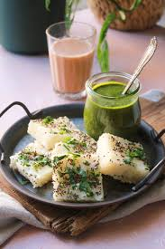

|
|
Cooking Instructions
- Prepare the Batter:
- In a mixing bowl, combine gram flour, semolina, yogurt, water, turmeric powder, salt, and sugar.
- Add green chili-ginger paste and mix well until you get a smooth batter. Let it rest for 15-20 minutes.
- Steaming the Dhokla:
- Grease a steaming tray or plate.
- Once the batter has rested, add fruit salt (Eno) and a few drops of water over it. Mix gently to incorporate.
- Pour the batter into the greased tray and steam for 15-20 minutes or until cooked through.
- Check with a toothpick; it should come out clean. Remove from heat and allow to cool slightly.
- Prepare the Tempering:
- Heat oil in a small pan. Add mustard seeds and let them splutter.
- Add sesame seeds, curry leaves, and slit green chilies. Fry for a few seconds.
- Add lemon juice and mix well.
- Final Steps:
- Pour the tempering over the steamed dhokla.
- Garnish with freshly chopped coriander leaves.
- Cut into squares or diamonds and serve.
Serve with: Green chutney or sweet tamarind chutney.
|

|